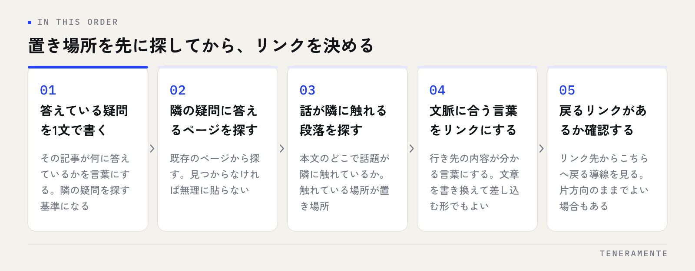

記事は増えたのに、1人が読むのは1ページで終わってしまう。内部リンクの貼り方は、関連記事をたくさん並べることではなく、どのページを中心に置くかを先に決めることから始まります。中心が決まっていないサイトでは、リンクを増やすほど導線が散らばっていきます。
📌 この記事の結論
先に決めるのは中心に置くページ（まとめ役のページ）が何かの1点です。そのうえで、個別の記事から中心へ1回、中心から個別へ1回ずつ、本文中の文脈のある場所に置くのが基本形になります。数を増やすこと自体は目的になりません。
01内部リンクは「次に読むもの」を提示する仕組み
内部リンク（internal link）は、同じサイト内のページ同士をつなぐリンクです。外部サイトからのリンクと違い、自分の判断だけで設計できるのが特徴です。
役割は2つあります。ひとつは読者に次に読むものを提示すること。検索から入ってきた人は、その1ページだけで疑問が解けるとは限りません。隣の疑問に答えるページがあることを、本文の流れの中で知らせる役目です。
もうひとつは、検索エンジンにページの存在と関係を伝えることです。どこからもリンクされていないページは、見つけてもらうまでに時間がかかります。また、どのページが多くリンクされているかは、サイトの中で何が中心なのかを示す手がかりになります。
この2つは、たいてい同じ方向を向きます。読者が自然に次を知りたくなる場所に置いたリンクは、検索エンジンにとっても関係性の分かるリンクになります。逆に、読者が押さないリンクを増やしても、どちらの役割も果たしません。
02貼る前に決めること：どのページを中心にするか
手を動かす前に、サイトの地図を1枚書きます。やることは1つで、中心に置くページを決めることです。
中心になるのは、扱う範囲が広く、長く使えるページです。サービスの説明ページや、1つのテーマを通しで解説したページがこれに当たります。そこから枝分かれする形で、個別の疑問に答える記事を並べます。
地図ができたら、つなぎ方は2方向です。
- 個別の記事 → 中心のページ：記事の最後に1回。そのテーマ全体を知りたい人の出口になります
- 中心のページ → 個別の記事：中心のページから、関係する記事へそれぞれ1回
このとき、個別の記事どうしを無条件に横につながないのが要点です。横のつながりは、読者の疑問が実際に隣り合っているときだけ置きます。全記事を相互にリンクさせると、どのページが中心なのかが分からなくなります。
新しいページは「どこからリンクするか」を同時に決める
ページを公開してから内部リンクを考えると、たいてい後回しになります。公開の作業に、既存のどのページから1本リンクを足すかを組み込んでおくと、どこからもつながっていないページが生まれません。追加するリンクは1本で十分です。
03内部リンクの貼り方：5つの手順
実際の作業は次の順番で進めます。1記事あたり10分ほどの作業です。

- その記事が答えている疑問を1文で書く。隣の疑問を探す基準になります
- 既存のページから、隣の疑問に答えているものを探す。見つからなければ無理に貼りません
- 本文のどの段落で話が隣に触れるかを探す。触れている場所が置き場所です
- その文脈に合う言葉をリンクにする。文章を書き換えてリンクを差し込む形でも構いません
- リンク先から、こちらへ戻るリンクがあるかを確認する。片方向のままでよい場合もあります
この順番のいいところは、置き場所を先に探してからリンクを決める点です。「関連記事を3本入れる」と決めてから探すと、関係の薄いページを無理に当てはめることになります。
04アンカーテキストの書き方
アンカーテキスト（リンクになっている文字）は、押す前に行き先が分かる言葉にします。
| 書き方 | 例 | 評価 |
|---|---|---|
| 行き先の内容を示す | タイトルタグの書き方 | 読者も検索エンジンも行き先が分かる |
| 文中の語句をそのまま | 構造化データの設定方法 | 文脈が自然で、押しやすい |
| 指示語だけ | こちら／詳細はこちら | 行き先が分からない。多用は避ける |
| URLをそのまま | https://… | 読みにくく、内容が伝わらない |
避けたいのは、同じアンカーテキストを機械的に使い回すことです。たとえば狙っている言葉をそのままリンク文字にして全記事に貼ると、文脈から浮いて読みにくくなります。行き先の内容を表す言葉であれば、記事ごとに言い方が変わって構いません。言葉の選び方そのものについてはSEOキーワードの選定の考え方が参考になります。
05置く場所で効果が変わる
同じリンクでも、置く場所によって押される度合いが変わります。
| 置く場所 | 読者への働き | 向いている用途 |
|---|---|---|
| 本文の途中 | 疑問が生まれた瞬間に出るため押されやすい | 隣の疑問に答える記事へ |
| 記事の末尾 | 読み終えた人が次を探す場所 | 中心のページ、次の一歩 |
| パンくず・ナビ | 常に出るが、意識して押されることは少ない | 階層の案内、迷ったときの戻り先 |
| サイドバーの一覧 | 流し見されやすい | 新着・人気の提示 |
もっとも効くのは本文の途中です。読者がその話題に触れている最中なので、押す理由がはっきりしています。一方で、パンくずは押されるためというより、サイトの階層を読者と検索エンジンの両方に示すためのものです。階層の情報は構造化データ（JSON-LD）の書き方で機械にも読める形にしておくと、検索結果の表示にも反映されます。
06やりすぎの線引き
内部リンクは増やせば効くというものではありません。線引きは数ではなく、次の4つで判断します。
- 文脈があるか：その段落で話が実際に隣に触れているか。触れていなければ不要です
- 読者が押す理由があるか：押した先で疑問が1つ解けるか
- 同じページへ重複していないか：1記事から同じページへは1回で足ります
- 全記事に同じリンクを入れていないか：どのページにも同じリンクが並ぶと、意味の差がなくなります
リンクの本数ではなく、押す理由の数を増やすほうが結果につながります。
本文を埋め尽くすリンクは、読みにくさとして返ってくる
1つの段落に複数のリンクが並ぶと、どれを押すべきか判断できず、結果としてどれも押されません。目安として、1つの段落に入れるリンクは1本までにしてください。足したいリンクが多い場合は、記事を分けるか、末尾にまとめる形を検討します。
07貼ったあとに確認すること
貼って終わりにせず、月に1回だけ確認します。見るのは2点です。
ひとつは、サイト内で多くリンクされているページが、中心に置いたページになっているかです。Search Consoleの「リンク」の画面から、内部リンクの多い順に一覧を見られます。中心に置いたつもりのページが下のほうにあれば、設計と実態がずれています。確認の手順はSearch Consoleの使い方にまとめています。
もうひとつは、どこからもリンクされていないページがないかです。同じ画面で、一覧に出てこないページがそれに当たります。公開したまま忘れていたページは、ここで見つかります。
確認の頻度は月1回で十分です。リンクを足した結果が検索結果に反映されるまでには時間がかかるため、数日単位で見ても判断材料になりません。
1記事に入れる内部リンクは何本が適切ですか？
古い記事に、新しい記事へのリンクを後から足してもよいですか？
リンクを増やしたのに回遊が増えません。何を見直せばよいですか？
08まとめ：中心を決めてから、文脈のある場所に1本ずつ
内部リンクの貼り方は、中心に置くページを決めることから始まります。個別の記事から中心へ1回、中心から個別へ1回。横のつながりは、読者の疑問が実際に隣り合っているときだけ置く。この形を守るだけで、記事を増やしたときに導線が散らばらなくなります。
そして、判断基準は本数ではなく文脈です。その段落で話が隣に触れているか、押した先で疑問が1つ解けるか。この2つを満たすリンクだけを残していくと、読者にも検索エンジンにも、サイトの中で何が中心なのかが伝わる状態になります。
TENERAMENTEでは、サイトを作る段階からページ同士の関係と導線を設計し、公開後に何を見て何を直すかまでを含めてお手伝いしています。集客を前提としたサイトの考え方はホームページ・LP制作のページにまとめていますので、いまのサイトで記事と導線をどう整理すべきか迷っている場合は、お問い合わせよりお気軽にご相談ください。